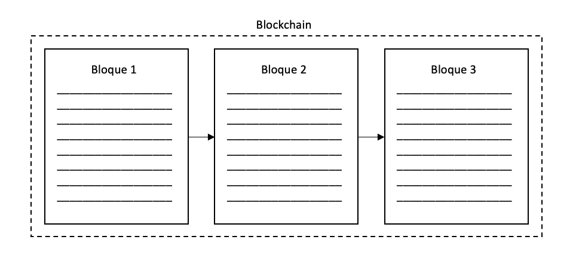
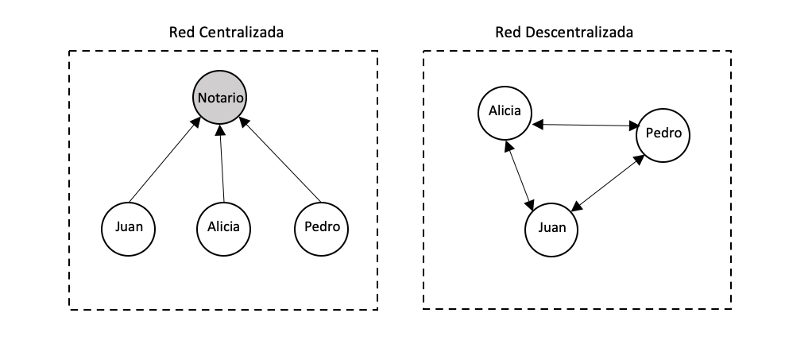
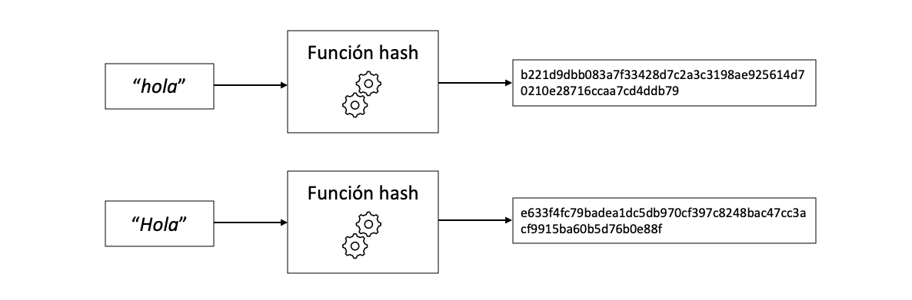
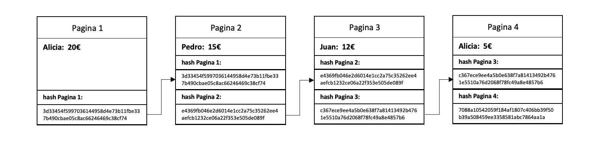
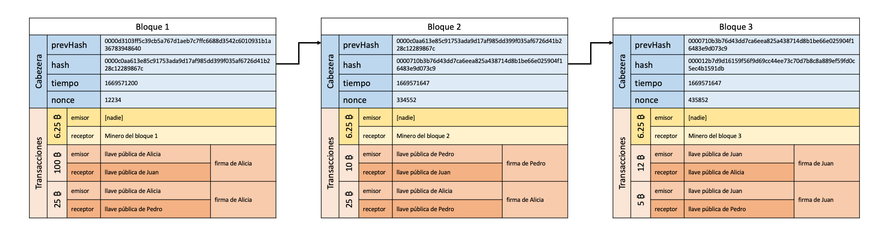

In this post I try to explain what a blockchain is in the simplest, most visual and interactive way possible. It is not necessary to have knowledge of programming or cryptography to understand how a blockchain works. If you want to go into more detail, I have another post explaining how to program a blockchain in Python from scratch.
Introduction
Wikipedia defines blockchain as: “a label that through a data structure whose information is grouped into sets (blocks) to which meta-information related to another block of the previous chain is added in a time line to make a secure follow-up through large cryptographic computations.” But what does all this mean? The word blockchain comes from the junction of “blocks” and “chain”. But what are these “blocks”? And why are they “chained”?
When we talk about a chain of blocks, we are referring to a series of objects, or blocks, that contain certain information, but they are not a group of objects without a relationship between them, rather each object refers to the previous one. Imagine for example a book, we can define a book as a chain of pages or “page-chain”, the book only makes sense if the pages are ordered correctly.

En una blockchain cada bloque sería como una pagina de un libro que hace referencia a la pagina anterior. Vale, pero esto, ¿para qué sirve?
What is a blockchain for?
To understand the usefulness of a blockchain, we first have to understand the differences between a centralized and decentralized network. A centralized network depends on a central entity, and the rest of the participants of that network trust the central node to supervise the correct functioning of the network. An example of a centralized network would be a group of friends who trust a notary (or central node) to keep the accounts of the group. Every expense they make is communicated to the notary and he is in charge of keeping the balance of group expenses. This system fails if the group cannot trust the notary to keep the accounts. There are many cases in which you should not trust a person or entity to handle data, contracts or money. A decentralized network is a solution to this problem of mistrust, since in a decentralized network all the participants are in charge of supervising the network and no one can have more power than the rest, the decision-making power is divided among all the participants. For example, in the case of a group of friends, everyone would have a copy of a notebook in which they write down everyone’s expenses. Of course this is not so easy, there are some tools that allow a decentralized network to work and this is what a blockchain is for.

A blockchain is a tool that allows the creation of a decentralized network in which everyone can trust the veracity of the information recorded, even if no one trusts anyone. A blockchain records immutable and sequential information.
Let’s imagine the case of a group of friends (Alicia, Juan and Pedro) who want to keep track of their trip accounts. For this they have bought a common notebook and on each page they write down each expense. If everyone in the group of friends trusts everyone, that’s great, but what if they can’t trust each other? One of them could change the spending on one of the pages and thus steal money from the rest. The solution is to “decentralize” the notebook, or in other words that everyone has an exact copy of the notebook, but a priori, this doesn’t seem to solve anything, how do we know if someone has modified their copy of the notebook? We could get around this by making the pages immutable, writing on the pages with a pen, for example. But in the end you can always tear out the page and insert a new modified one, and in the digital world everything can be modified without leaving a trace. What we can do to make sure that no one has modified the notebook is that the pages are linked in such a way that when one small detail of a page is modified, the notebook no longer makes sense. It can be achieved by having the information on each page encoded on the next page, and so on. For example, we write down the initial of the person and the amount of the expense of the previous page at the bottom of each page, and we chain these codes. In this way, if someone modifies any page, they can verify that the codes that link the pages do not match and the notebook will not be valid.

If Pedro decides to modify page 2 of his notebook and writes down 85€ instead of 15€ then the code noted on page 3: "A20P15" does not match, it should be "A20P85". This way we can verify that someone has modified page 2 and by verifying Pedro’s notebook we would see that it is incorrect, it does not add up. So every time we add a new page to the notebook we verify the notebooks and by voting the notebooks of Alicia and Juan are chosen to be part of the “official notebook”

But here there are some problems that we have not taken into account. Anyone can modify a notebook page and modify all subsequent codes to validate the notebook. In this way, no one could suspect that the notebook has been modified and when verifying it, it would appear that everything is in order. This is solved by making it cost a lot of work to modify the code of each page, so that whoever tries to modify all the pages has to do a practically impossible amount of work. We can make it necessary to include the solution to an equation in the code of each page. Solving this mathematical operation takes time, this is what is commonly called “proof-of-work” or proof of work, that is, to add a page new you have to show that you have done an amount of work that would make it impossible to modify all the pages in a reasonable amount of time.
Another problem is that anyone can impersonate another person. So we need some way to “sign” the pages in such a way that it can be verified that each expense has been recorded by the corresponding person.
Apart from these problems, it is easy to notice that the code that links the pages gets bigger with each page, if we have a notebook with millions of pages the code gets too big. We need some way to make all pages have the same code size
To solve these problems we use cryptography, and this is where the word “cryptocurrency” comes from.
Crypto
Cryptography allows us to encrypt information or sign data by using mathematical algorithms. This is what makes blockchains so reliable. Cryptography is based on mathematical laws that make these algorithms so secure. The two most important cryptographic tools on any blockchain are the hash function and the digital signature.
hash function
The hash function is one of the most important cryptographic tools and is essential to create a blockchain. Although the inner workings of a hash function can be very complicated, the concept is quite simple. It is a function that converts an input (the word “hello” for example) into an output that a priori seems random, although it is not.

What makes the hash function so useful is that it always returns a result of the same size. There are many different types of hash algorithms, one of the most used is SHA256, which returns 256 bits. It doesn’t matter if the input of the function is the letter “a” or the whole Quixote, the result is always 256 bits. You can then try experimenting with the hash function:
#| standalone: true
import hashlib as hs
from shiny import *
app_ui = ui.page_fluid(
ui.tags.style(
"""
.app-col {
border: 1px solid white;
border-radius: 5px;
background-color: #ffffff;
padding: 8px;
margin-top: 5px;
margin-bottom: 2px;
}
"""
),
ui.row(
ui.div(
{"class": "app-col"},
ui.p(
ui.input_text("x", "", placeholder="hola",width="75%"),
),
ui.p(
ui.output_text("txt"),
),
),
align="center",
)
)
def server(input, output, session):
@output
@render.text
def txt():
if len(input.x()) == 0:
hash = hs.sha256(("hola").encode()).hexdigest()
else:
hash = hs.sha256((input.x()).encode()).hexdigest()
return f'{hash}'
app = App(app_ui, server, debug=True)
The hash function is chaotic, meaning that a tiny change in the input (for example, capitalizing “h”) causes a completely different result. It is important to distinguish chaotic from random, the hash function is not random, it is deterministic, it will always return the same output to the same input. One could compare the hash function with the double pendulum system, another example of a chaotic system. In a double pendulum, the inputs would be the initial angles of the pendulums, and the output would be the resulting movement. Changing the initial conditions of the double pendulum a bit causes completely different motion results. In the example below it appears that the two pendulums start out the same at first, but actually have a negligible change in initial angle, but this tiny change is enough to completely alter the result.


Another characteristic of the double pendulum system is that after a while it is practically impossible to deduce the initial state of the pendulum. In the same way, it is impossible to know which input to the hash function will give a specific result or, in other words, it is impossible to hash the function backwards. The only way to know what result an input will give is by performing the hash function on that input.
If you remember the problems mentioned before, the hash function solves one of the problems: encoding the information of each page (or block) in a unique, deterministic way and with a fixed size. In this way the blocks are “chained” because each block contains the hash of the previous block. Since the hash of the previous block is included to obtain the hash of the subsequent block, changing a single number causes radical changes to all the hashes of subsequent blocks, ie: they are chained.

The hash function also allows you to implement proof of work. Computing the hash function requires a certain amount of time. As you could see from the interactive hash function above, it doesn’t take very long to compute, but if it runs millions of times the amount of time is significant. To implement proof of work in a blockchain, we can add a free variable (nonce) to the input of the hash function and require that the hash of each block start with "0000". Since it is impossible to know which input will result in a hash beginning with "0000", the only way is to try and test until you succeed. This process of testing thousands of possible inputs for the hash function requires computation and time. For example, using the word "hello" as input to the hash, we test "hello_0", "hello_1", "hello_2"… In the end after some time we solve the proof of work, if we try with "hello_167537" we get the hash that starts with 4 zeros:
0000c24a5157df9c08de36972e30404e463b1e76bbb25007395d455b9494ad77
Digital signature
The digital signature, like a real signature, allows us to mark information in such a way that anyone can verify that indeed, that signed information has been created by us. Without this tool, a cryptocurrency could not function since any member of the blockchain could impersonate another person. If we stop to think, what is a signature, it is nothing more than modifying a document with a brand that only the person who signs can do. The process of signing a document is quite intuitive, but how can someone verify that the signature is real? This is where asymmetric encryption comes into play. Encryption is nothing more than the process of blocking or hiding something from public access. The normal doors of our houses are a type of symmetrical “encryption”. We have a key that is the same one that closes or opens the door, that is, the opening process is symmetrical to that of closing. The same goes for bike locks or lockers. On the other hand, in an asymmetric encryption there are two keys: one that closes and another that opens. If our houses had asymmetrical doors, we would need a different key to open the door than to close it. It doesn’t seem complicated at all, but this is extremely useful for digital signatures.

In a digital signature, the closing key is the private key, and the opening key is the public one. The public key is generated from the private key, but it is impossible to know the private key knowing only the public one. Let’s say Alice has a public and private key pair and wants to sign a letter. The public one can be seen by anyone, and the private one is only known to her. Alicia encrypts a letter using her private key and sends it to Juan. Remember that this letter can now only be opened with Alicia’s public key. Juan opens the letter with Alicia’s public key and in this way Juan knows that this letter has been encrypted by Alicia with her private key, without having to know what Alicia’s private key is.
What does this have to do with Bitcoin?
If you’ve made it this far, congratulations! You already know what Bitcoin is. Bitcoin is nothing more than a blockchain in which the information in each block (or page) is a series of transactions. It is a shared notebook, in which transactions are recorded on each page. When a person says that he has x bitcoins, in reality those bitcoins are nothing more than the result of searching the Bitcoin “notebook” for all the transactions and adding the received ones, and subtracting the sent ones. The public key is nothing more than the address of the wallet and the private key is what allows you to sign transactions in which you are the issuer, or in other words, it is the famous password that gives you access to your bitcoins. If you lose your private Bitcoin key, you lose the ability to move the bitcoins that you have associated with that wallet and since the blockchain is decentralized and there is no “boss” and nobody can help you, you will have lost those bitcoins forever.
There are a couple more details in Bitcoin. Earlier we talked about the “proof of work”. This is the same as “mining”. The process of adding a new block to Bitcoin is known as mining a block. Bitcoin miners are nodes that keep a copy of the Bitcoin blockchain and use very powerful computers to solve the proof of work. When you make a transaction in bitcoins this transaction is sent to all miners. The miners “prepare” the new block by entering the new transactions and compete to solve the proof of work. The first to solve the proof of work has the right to add that block to the blockchain and the rest of the nodes accept it as the new blockchain. The difficulty of the proof of work is such that it takes approximately 10 minutes to mine a block.
When a new block is mined, the corresponding miner receives a “reward”. The new block contains a transaction in which the mining reward is sent to the corresponding miner (the current reward is 6.25 bitcoins). This is the only way bitcoins are created, all existing bitcoins come from the reward of mining a block. But Bitcoin has a peculiarity, the algorithm that determines the reward is designed in such a way that the reward is halved every 210,000 blocks (or approximately 4 years). This makes it a known and limited supply coin. It takes approximately 10 minutes to mine a new block. In 2140 the last Bitcoin will be mined and there will always be 21 million bitcoins (right now there are around 19 million in circulation).
 Bitcoin is a pseudo-anonymous currency, all transactions are public and traceable by anyone, but it is impossible to know to whom in the real world each Bitcoin address corresponds. There are ways to know the relationship between the real person and the digital one, for example, exchange companies (Binance, Coinbase…) are required by law to identify users. Therefore, when you buy bitcoins on an exchange, you know who those bitcoins are associated with. Of course, there are ways around this, for example by buying bitcoins in cash or through the deep web.
It is said a lot that Bitcoin is worthless, worthless, or even a scam. As we have seen, Bitcoin offers many advantages that give it value. It is a decentralized, real, anonymous, limited supply and universal currency. This means that anyone, from a rancher in Afghanistan to a fisherman in Zimbabwe, can participate in the international economy without asking anyone’s permission, without being of any nationality, or having to trust that the dictator of the day will not decide to print money without stop and devalue the currency. Bitcoin participants don’t have to trust anyone, they just have to trust cryptography and math. I do not want to go into the subject of monetary policy, which would give for a book, but we are facing an inflationary crisis because our monetary system is based on trusting some gentlemen in the central banks who have absolute power over money.
Observations
Of course I have left out some details (such as transaction fees or the double spend problem), it is not said for nothing that Satoshi Nakamoto (the alleged creator of Bitcoin) was a genius. The very story of the creation of Bitcoin and the mystery of Satoshi Nakamoto would make for a movie. Creating a blockchain is very complex and there are many problems that are not easy to solve.
It should be remembered that a blockchain is not the same as a cryptocurrency. A blockchain is nothing more than the tool used by decentralized cryptocurrencies such as Bitcoin, Etherium, Cardano… Making a simple equivalence with physical money, a serious blockchain is like the paper, the ink, the marks or the stamp that make a ticket reliable. But a blockchain can be used for many other applications such as smart contracts, wills, product tracking, academic certificates or even digital legislation and decentralized democratic systems. The possibilities of blockchains are endless and it is a world that is only beginning.
If you want to know more, here are some interesting links:
Statoshi Nakamoto, Bitcoin paper https://bitcoin.org/bitcoin.pdf
Simply Explained, How does a blockchain work https://www.youtube.com/watch?v=SSo_EIwHSd4&ab_channel=SimplyExplained
Computerphile, Public Key Cryptography https://www.youtube.com/watch?v=GSIDS_lvRv4&ab_channel=Computerphile
Computerphile, What are Digital Signatures? https://www.youtube.com/watch?v=s22eJ1eVLTU&t=547s&ab_channel=Computerphile